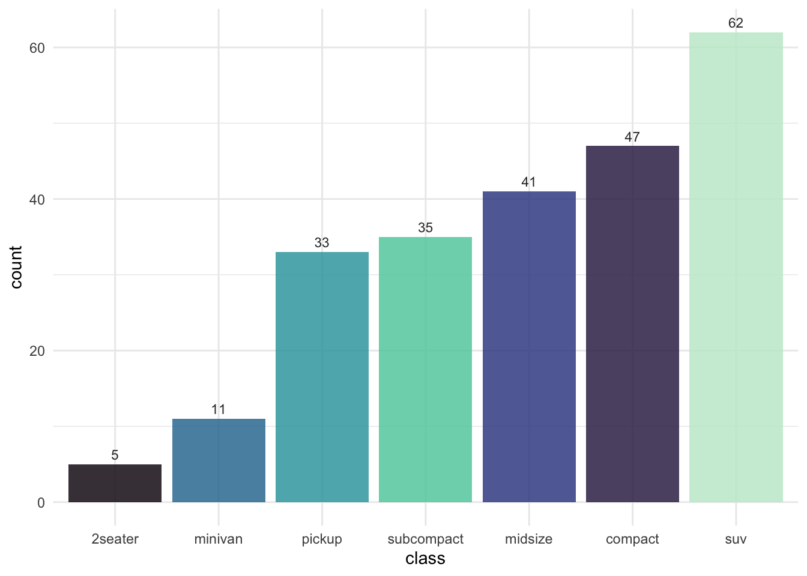
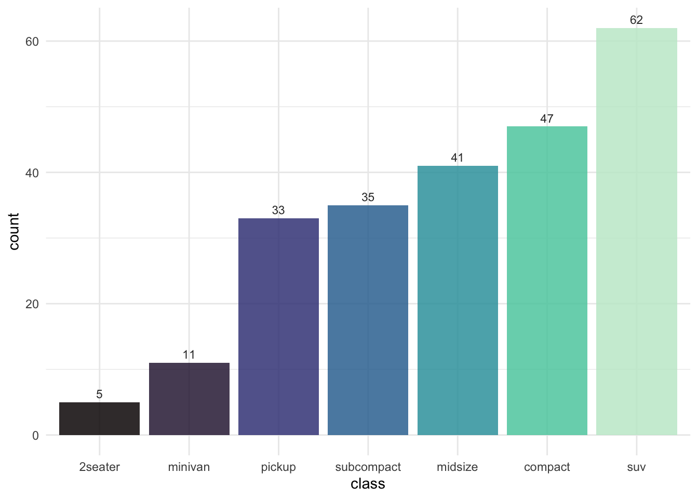
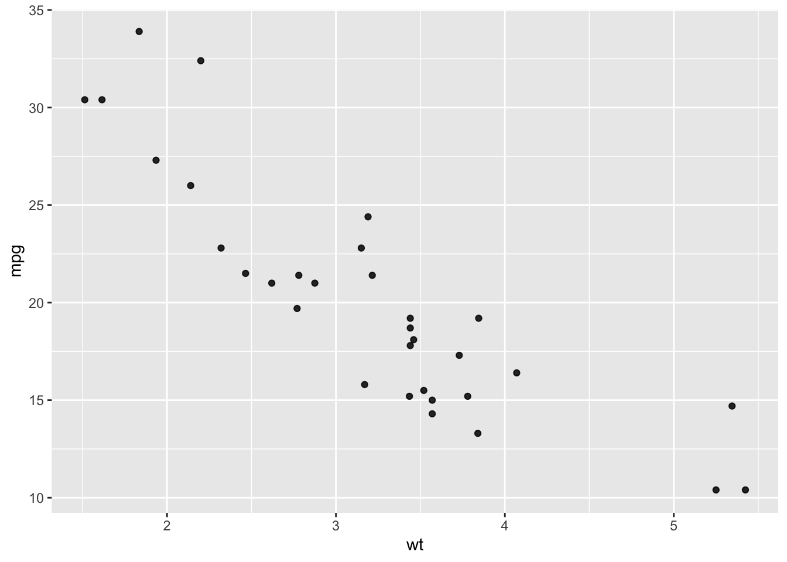

2 Basic plots
2.1 Bar plots
Bar plots are ideal for plotting frequencies. Although it is easy to create a simple bar plot, there are several things that can be done to improve on them:
If there are multiple categories, use a
fillto further emphasize that the data represents different categories. Also think about which color to use and the ordering of the colors to best represent the data.Order the categories in terms of their frequency
Add frequency labels to make it easier to see the exact frequencies
There are two basic ways to construct a bar plot in ggplot. The first way is to use the raw data and have ggplot calculate the frequencies.1
Code
ggplot(mpg, aes(x = fct_rev(fct_infreq(class)), fill = class)) +
geom_bar(alpha = .85) +
geom_text(
stat = "count",
mapping = aes(label = ..count..),
vjust = -0.5,
color = "grey20",
size = 3
) +
labs(x = "class") +
guides(fill = "none") +
scale_fill_viridis(discrete = TRUE, option = "mako", begin = .05, end = .95) +
theme_minimal()
If you want to flip the order from high to low, remove the fct_rev() function from the code.
The second way is to first calculate the frequencies yourself and then use the resulting data frame to plot the frequencies.
Code
counts <- count(mpg, class)
ggplot(counts, aes(x = reorder(class, n), y = n, fill = class)) +
geom_col(alpha = .85) +
geom_text(
mapping = aes(label = n),
vjust = -0.5,
color = "grey20",
size = 3
) +
labs(x = "class", y = "count") +
guides(fill = "none") +
scale_fill_viridis(discrete = TRUE, option = "mako", end = .95) +
theme_minimal()
2.1.1 Stacked bar plots
Stacked bar plots can be used to add additional information to a bar plot, but they generally are difficult to interpret. It’s difficult to assess the varying sizes of the stacked bar charts. Plotting Likert responses as a stacked bar char may be an exception, as long as it is accompanied by labeled percentages and rotated horizontally. See the Likert chapter for more information.
Usually the better way to add additional information to a bar plot is to use faceting.
2.2 Scatter plots
Scatter plots are useful to visualize the relationship between two numeric variables. If this is indeed the goal of the graph, it is useful to also plot a line that summarizes the relationship.
Code
ggplot(mtcars, aes(x = wt, y = mpg)) +
geom_point(alpha = .85) +
geom_smooth(
method = "lm",
color = mako(1, begin = .5),
alpha = .25
) +
theme_minimal()
Testing a footnote here.↩︎